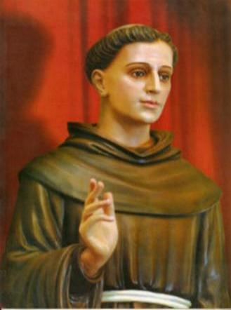

A VIDA DO SANTO FREI ANTONIO DE SANT' ANNA GALVÃO

"ÍNDICE"
 UM HOMEM SANTO
(Nascimento e Família, A Formação do Filho, No
UM HOMEM SANTO
(Nascimento e Família, A Formação do Filho, No
Lar, Noviciado, Sacerdócio, Obediente a Vontade Divina)
SUA OBRA E SUA
CARIDADE
(A Dupla Orfandade, Feliz
Reencontro, As Dificuldades do Convento, as Irmãs, Construção do Novo
Mosteiro (O Mosteiro da Luz), Regulamento e Organização, Prisioneiro da
Caridade)
DERRADEIROS
ANOS
(Os seus Dons, A Virtude da Caridade, Como
Surgiu a Pílula, Partida para o Exílio, Beatificação e Canonização, Milagre
para a Beatificação, Milagre para a Canonização)
ORAÇÕES + E-MAIL +
FIRMAS DE BUSCA